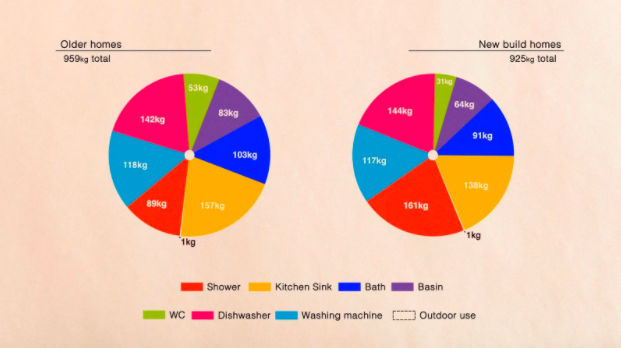

Taking Shorter Showers

How can taking shorter showers reduce one’s carbon footprint?
Showering for shorter times is an efficient and simple way to help reduce your carbon footprint. In the process of delivering water to your showerhead, water needs to be stored, cleaned, heated, and pumped. All of these processes require energy in the form of burning fossil fuels to happen. For every 1 gallon of water, 3 ounces of CO2 is emitted into the atmosphere at a rate of 2.5 Gallons per minute. This shows how much of a problem using too much water can be. Lessening your water demand can help reduce this CO2 usage.
How can taking shorter showers be beneficial for the average customer?
Showering for shorter times and using less water can significantly lower your household water bill. Usage of water, depending on use, is one of the highest bills, especially for multiple people. By showering for a lesser amount of time at a lesser temperature, water bills can drastically go down.